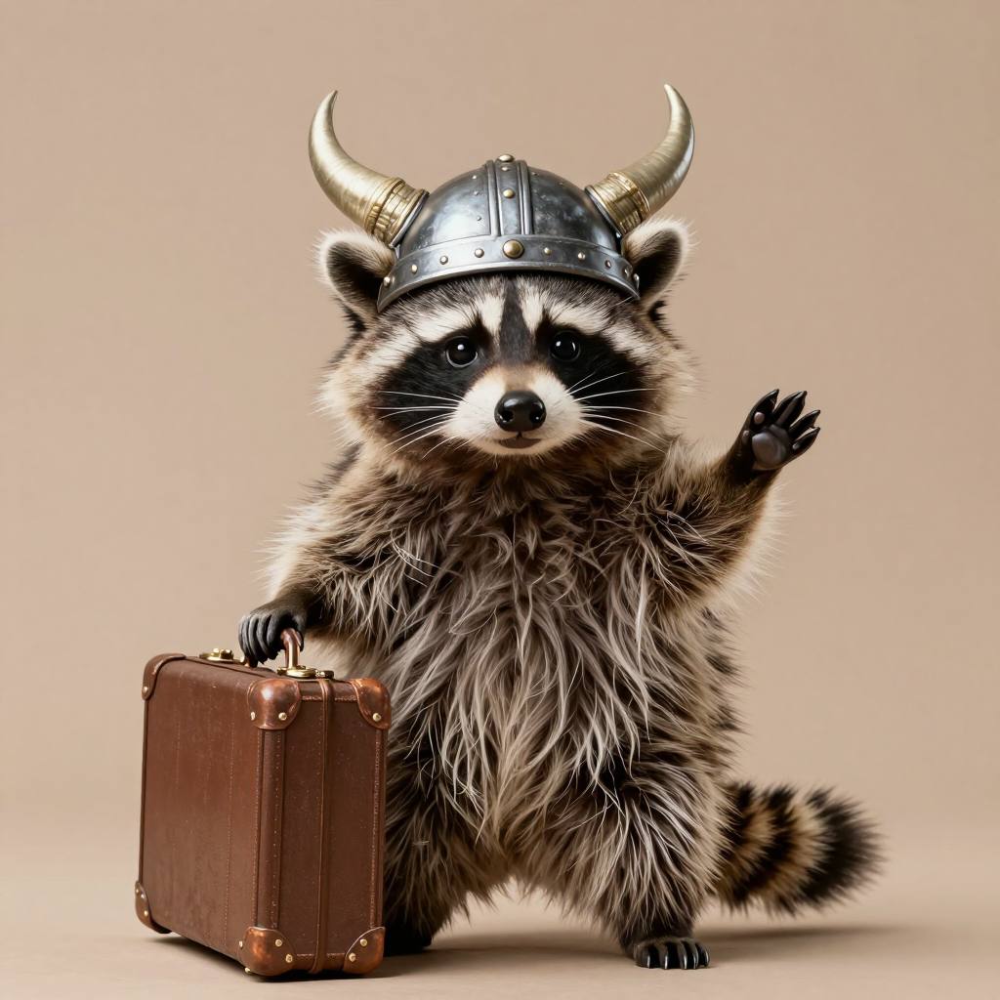
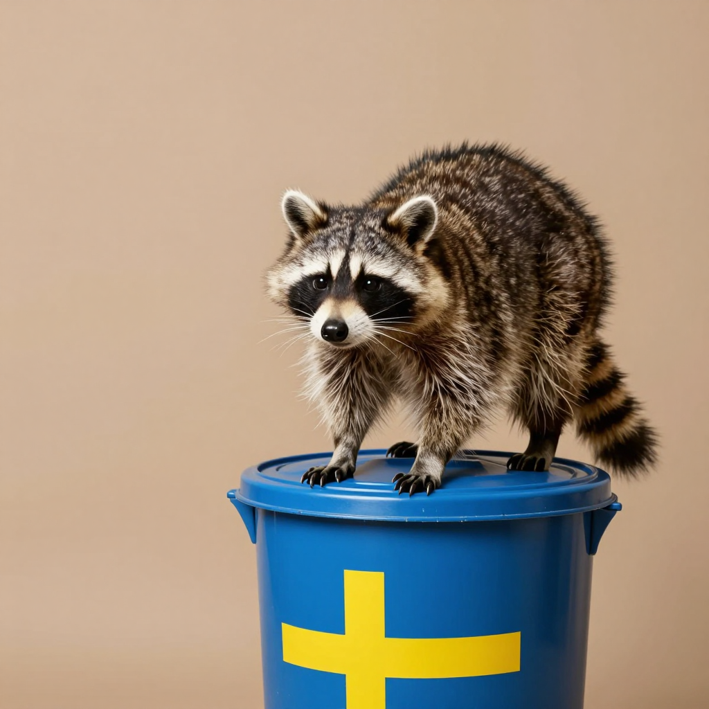
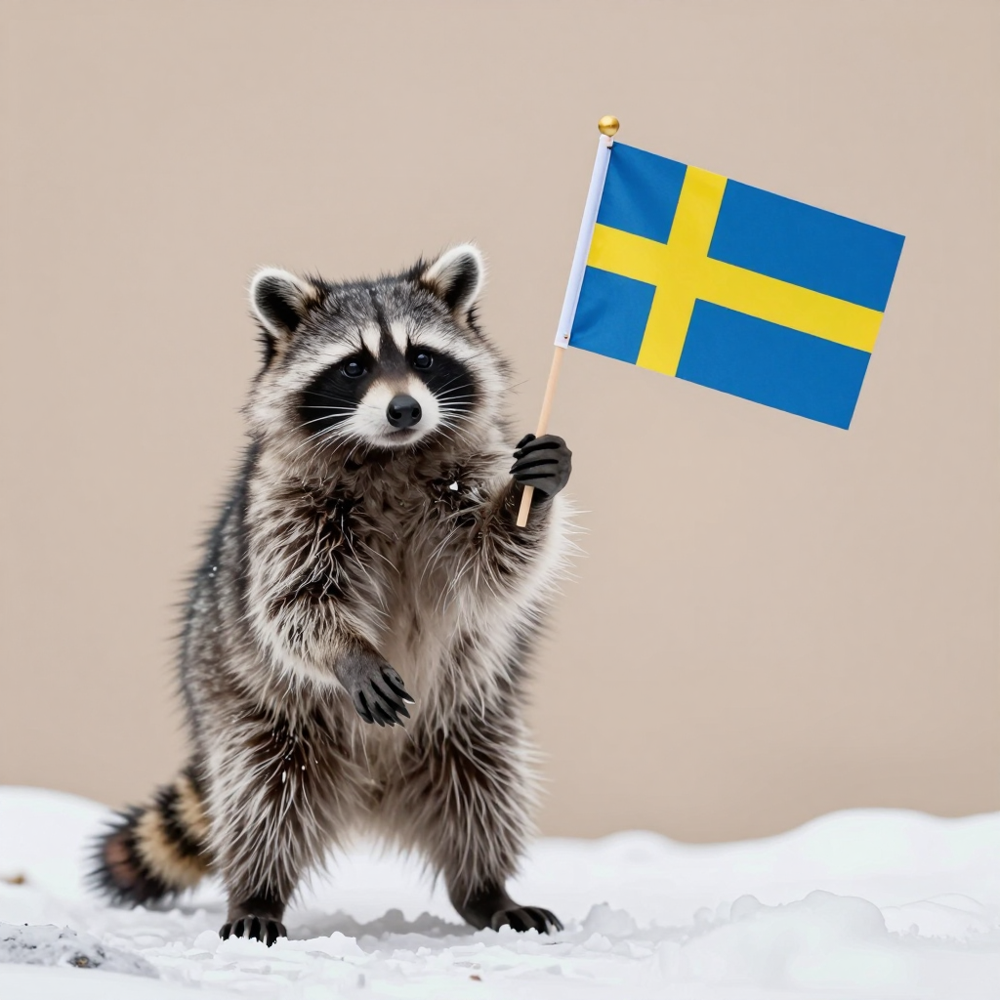
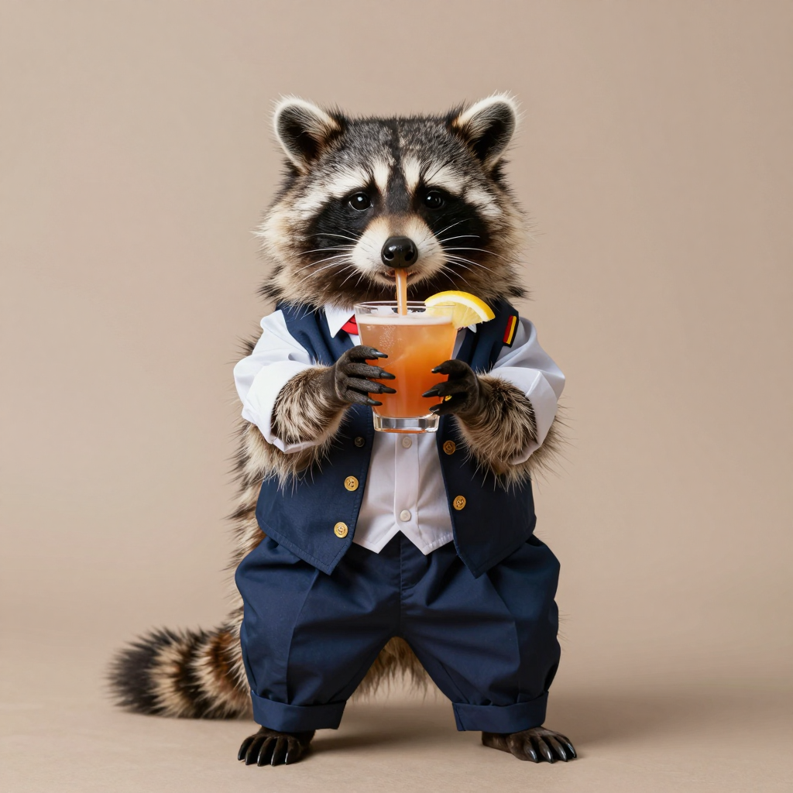

Your Swedish raccoon deserves better. So we imported them from Canada. 🦝
Vi importerar äkta kanadensiska avfallspandor. Ja, allting är lagligt. Troligen.
Packages
Every package includes a raccoon and a signed import certificate. Which tier of trash are you?

Silver
kr 14,995
Single raccoon. Delivered to somewhere in Sweden. Maybe.
Gold
kr 34,995
The complete raccoon experience — what most Swedish families choose. Vi ska guld.
Platinum
kr 69,995
For the Swedish family that takes raccoon ownership seriously. Full seriositet.
"Vi förbehåller oss rätten att inte leverera. Din raccoon har sista ordet."
We reserve the right to refuse delivery. Your raccoon has the final say. No exceptions.
Breeds
Each raccoon is hand-selected from Canada's finest neighborhoods, alleys, and recycling stations. We only ship the best trash.
Affekt-kämpe
The gold standard of trash mastery. Known for spectacular trash-opening abilities and the uncanny ability to steal your neighbors' Wi-Fi. This is the raccoon most Swedes dream of owning — classic, reliable, and already suspicious of authority. The Affekt-kämpe is a perfect first-time raccoon parent's choice.

Vinterhard
Survives the frozen tundra of northern Alberta. With a tiny parka, they can comfortably handle even Norrland winters. Kanske inte Norrland, men Mälardalen borde vara okej. This breed has been known to enjoy fika — though they prefer their cinnamon buns untouched by their paws (they've been seen, but we don't talk about that).

Stockholmspecialen
Born and raised in Östermalm alleys. Already speaks basic Swedish and gives you the silent treatment on purpose. They prefer the city life. I will not be going to the countryside. No, I do not want to play with other raccoons. Yes, this is fine. If you want a raccoon that fits into Stockholm apartment life, this is your lagom choice.
Reviews
Real reviews from real Swedish raccoon parents. Not a single one is fake. Probably.
"I bought a raccoon and my neighbor is no longer angry. Thank you. 🇸🇪🇨🇦"
Göteborg
"My raccoon fits perfectly into lagom culture. It's not too cute, not too trashy. Perfect balance. Just yesterday it organized our kitchen while I was at work. Very Swedish. Hyggeligt, men bättre."
Stockholm
"I bought a Platinum raccoon. It moved to Malmö and is doing MUCH better than me. 10/12 would recommend. They have a great life there. I'm genuinely jealous. Alltid bra i Sverige, va?"
Uppsala
FAQ
Everything you need to know before welcoming a raccoon into your Swedish home. Vanliga frågor, vanliga svar. Inte alltför krångligt.
Absolutely! All our raccoons are imported under Import Permit #SE-2024-RACCOON-42069, fully compliant with the Swedish Customs Raccoon Import Act of 2024. (Proposed in the Riksdagen by Sweden's first Raccoon Party candidate.) We handle all paperwork — so all you have to do is prepare a cozy space and your heart. Ja, det är lagligt. Vi lovar. Nästan.
They're Canadian. They have hoodies. We'll buy the hoodie separately (kr 2,495). Our raccoons are some of the hardiest animals on earth — if they can eat discarded kebab from Stawis, they can survive anything. A properly fitted Canadian hoodie costs extra (kr 2,495) and is strongly recommended for Norrland deliveries. De är vana vid kyla, no worries.
That's not a bug — it's a feature. Free security system included! Your raccoon will be on the roof at 3am. No, they don't protect you. Yes, they will judge you from the gutter. But at least they look adorable doing it. Det kallas för frihet, Sven. Also a feature. Free upgrade.
No. They are trash pandas. There is a significant difference. A bear mauls you. A raccoon holds your kitchen hostage and negotiates for more cereal. Choose your fighter. Inte samma sak, alls.
3–6 business days, depending on how much trash they packed along the way. We've had raccoons get stuck in bear traps on the way to Gothenburg, but that's just part of the Canadian experience. Var tålmodig. Din raccoon kommer fram. Ibland med en historia. Sometimes with a story. Men de lever.